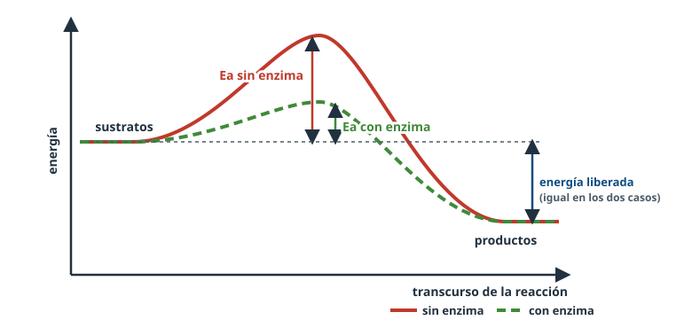
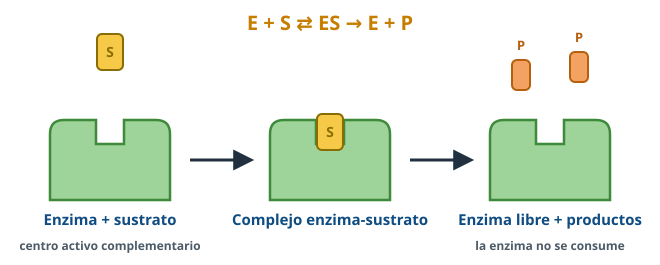
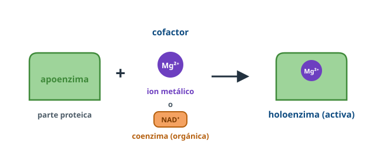
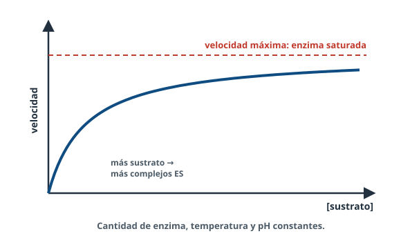
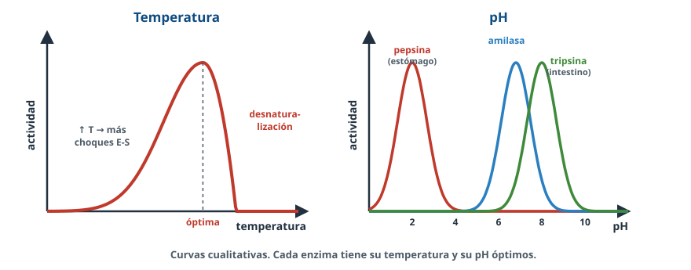
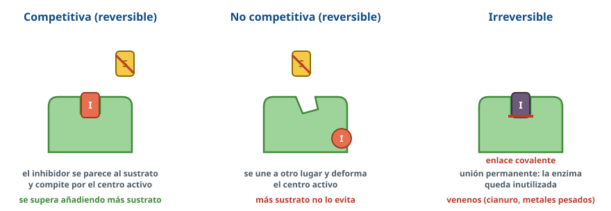
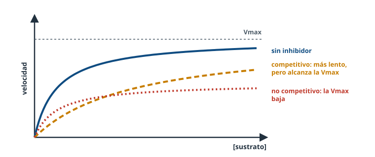
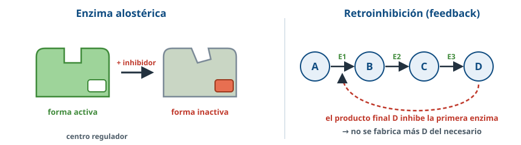
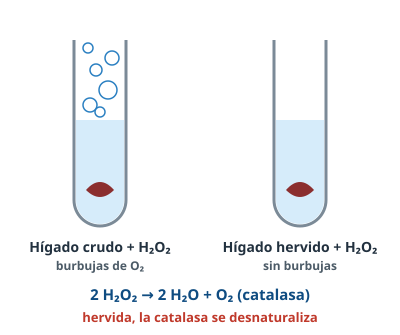

Sin ellas, las reacciones de la vida serían tan lentas que no habría vida. Las enzimas las aceleran sin gastarse, con una precisión enorme y bajo control.
Palabra clave = lo que buscan los criterios oficiales de correcciónTexto en violeta = aclaración de BioCelia que no está en los criterios
1Qué entra en la PAU
Directrices de Andalucía 2026-27 · A.3.3 (segunda parte)
Concepto de enzima como biocatalizador y sus propiedades: especificidad, alta eficiencia y regulación.
Papel de los cofactores y coenzimas.
Energía de activación e interpretación de gráficos.
Formación del complejo enzima-sustrato; centro activo y especificidad.
La velocidad depende de la cantidad de enzima y de la concentración de sustrato: interpretar gráficos sin ecuaciones de cinética.
Efecto de la temperatura, el pH y los inhibidores.
Inhibición reversible (competitiva y no competitiva) e irreversible; regulación alostérica.
Las vitaminas como coenzimas (A.4.1) se desarrollan en el tema «Vitaminas y salud».
Lo que más se ha preguntado (2010-2025)
Definir: enzima, centro activo, coenzima, inhibidor, energía de activación.
Factores que influyen en la actividad (temperatura, pH, sustrato) e inhibición (reversible e irreversible; competitiva y no competitiva).
Gráficas: energía de activación con y sin enzima, pH óptimo de enzimas digestivas, velocidad frente a sustrato.
Problemas: fiebre, pardeamiento de la manzana, patata y saliva, saturación de la enzima, compuesto análogo al sustrato.
2Concepto y propiedades
Las enzimas son proteínas con función catalítica (biocatalizadores) que aceleran las reacciones metabólicas al disminuir la energía de activación. Gracias a ellas las reacciones ocurren rápidamente en las condiciones suaves de la célula (unos 37 ºC, pH próximo a 7, presión normal). Casi todas son proteínas globulares; también existen algunos ARN con actividad catalítica (ribozimas).
Se nombran normalmente con el sufijo -asa añadido al sustrato o a la reacción: sacarasa, lactasa, ADN polimerasa, deshidrogenasa.
Especificidad
Cada enzima actúa sobre un sustrato (o un grupo de sustratos parecidos) y cataliza un tipo de reacción. Se debe a la forma del centro activo.
Alta eficiencia
Aceleran enormemente las reacciones y son eficaces en cantidades muy pequeñas, porque no se consumen: se recuperan intactas y actúan una y otra vez.
Regulación
Su actividad puede aumentar o disminuir según las necesidades de la célula (alosterismo, inhibidores, cantidad de enzima).
Lo que una enzima NO hace
No hace posibles reacciones imposibles: solo acelera las que pueden ocurrir.
No cambia la energía liberada o absorbida por la reacción ni su equilibrio: solo hace que se alcance antes.
No se consume ni se modifica al final de la reacción.
3Energía de activación
La energía de activación es la energía que hay que suministrar a los reactivos para que la reacción se produzca: la que necesitan para alcanzar el estado de transición, inestable, a partir del cual se forman los productos.

Figura 1. La enzima reduce la energía de activación.
Cómo leer esta gráfica (aparece en la PAU)
La curva más alta es la reacción sin enzima; la más baja, con enzima.
La altura desde los sustratos hasta el pico es la energía de activación: menor con enzima.
Si los productos están más abajo que los sustratos, la reacción libera energía (como las del catabolismo); si están más arriba, la consume (anabolismo).
La diferencia de energía entre sustratos y productos es la misma con y sin enzima.
4Mecanismo de acción y centro activo

Figura 2. E + S ⇄ ES → E + P.
El sustrato se une al centro activo de la enzima y se forma el complejo enzima-sustrato (ES), mediante enlaces débiles.
En el complejo se reduce la energía de activación: los enlaces del sustrato se debilitan, los grupos reactivos quedan bien orientados, y la reacción se acelera.
Se forman los productos, que tienen menos afinidad por la enzima y se liberan. La enzima queda libre e intacta para actuar de nuevo.
Centro activo y especificidad
El centro activo es la región de la enzima por la que se une al sustrato, formada por unos pocos aminoácidos (de fijación, que retienen el sustrato, y catalíticos, que lo transforman). Su forma tridimensional (un hueco o hendidura) es complementaria a la del sustrato, y de ahí la especificidad.
Modelo de la llave y la cerradura: el sustrato encaja en un centro activo rígido.
Modelo del ajuste inducido: al unirse el sustrato, el centro activo cambia ligeramente de forma y se ajusta a él. Es el modelo aceptado.
Así lo preguntan (PAU 2014)
«Sustituir unos aminoácidos por otros impide que una proteína catalice su reacción.» → Puede haberse cambiado un aminoácido del centro activo, que ya no reconoce al sustrato, o el cambio altera el plegamiento de la proteína.
5Cofactores y coenzimas

Figura 3. Holoenzima = apoenzima + cofactor.
Muchas enzimas necesitan, además de su parte proteica (apoenzima), una molécula no proteica, el cofactor. Juntas forman la holoenzima, la enzima activa. Los cofactores permiten que determinadas reacciones se desarrollen, actuando como activadores o transfiriendo grupos químicos (o electrones):
Iones metálicos: Mg²⁺, Zn²⁺, Fe²⁺, Cu²⁺… Por ejemplo, muchas enzimas que usan ATP necesitan Mg²⁺.
Coenzimas: biomoléculas orgánicas que intervienen en las reacciones transportando electrones o grupos químicos de una enzima a otra: NAD⁺, NADP⁺, FAD, coenzima A, ATP. Muchas derivan de vitaminas del grupo B, y por eso la falta de una vitamina impide que funcionen ciertas enzimas.
Cuando el cofactor está unido a la enzima de forma muy fuerte y estable (a veces covalente) se llama grupo prostético.
6Velocidad de reacción: cantidad de enzima y de sustrato
La velocidad de reacción es la cantidad de producto que se forma por unidad de tiempo (o de sustrato que desaparece).

Figura 4. Velocidad frente a concentración de sustrato (curva cualitativa).
Concentración de sustrato: al aumentarla, se forman más complejos enzima-sustrato y la velocidad aumenta, hasta que todas las moléculas de enzima están ocupadas: la enzima está saturada y se alcanza la velocidad máxima, que ya no aumenta aunque se añada más sustrato.
Cantidad de enzima: si hay sustrato en exceso, la velocidad es proporcional a la cantidad de enzima (el doble de enzima, el doble de velocidad).
Si no se añade más sustrato, la velocidad disminuye a medida que se gasta y se detiene cuando se agota.
En algún examen (PAU 2024) se ha pedido localizar en la gráfica la mitad de la velocidad máxima: la concentración de sustrato a la que se alcanza se llama Km e indica la afinidad de la enzima por su sustrato (cuanto menor es la Km, mayor es la afinidad). Las directrices de 2026-27 no exigen ecuaciones de cinética.
7Temperatura y pH

Figura 5. Temperatura y pH óptimos (curvas cualitativas).
Temperatura: al subir la temperatura aumenta la actividad, porque las moléculas se mueven más y se forman más complejos ES, hasta la temperatura óptima. Por encima, la actividad cae bruscamente porque la enzima, de naturaleza proteica, se desnaturaliza y pierde su actividad. A temperaturas bajas la enzima está poco activa pero no se destruye.
pH: cada enzima tiene un pH óptimo en el que su actividad es máxima. Fuera de él cambian las cargas de los aminoácidos, se dificulta la unión del sustrato al centro activo y la actividad baja; con valores extremos la enzima se desnaturaliza. Por ejemplo, la pepsina del estómago actúa a pH ácido (hacia 2) y la tripsina del intestino, a pH ligeramente básico.
Conexión con la vida real
La fiebre moderada acelera el metabolismo, pero una temperatura muy alta desnaturaliza enzimas y puede ser mortal. Los lisosomas bombean H⁺ a su interior para mantener el pH ácido que necesitan sus enzimas hidrolíticas.
8Inhibición enzimática
Un inhibidor es una sustancia que disminuye o anula la actividad enzimática.

Figura 6. Tipos de inhibición.
Tipo
Cómo actúa
Consecuencia
Irreversible
Se une a la enzima (a menudo al centro activo) mediante enlace covalente
Inutiliza la enzima de forma permanente. Ejemplos: metales pesados (mercurio, plomo); los insecticidas organofosforados y los gases nerviosos, que inutilizan la acetilcolinesterasa; la penicilina, que inutiliza la enzima que fabrica la pared bacteriana
Reversible competitiva
El inhibidor tiene una forma parecida al sustrato y compite con él por el centro activo (enlaces débiles)
Disminuye la velocidad, pero se supera aumentando la concentración de sustrato
Reversible no competitiva
El inhibidor se une a otro lugar de la enzima (enlaces débiles) y modifica la forma del centro activo
Disminuye la velocidad máxima; no se supera añadiendo más sustrato
La diferencia entre irreversible y reversible se debe al tipo de unión: el irreversible se une por enlace covalente; el reversible, por enlaces débiles, y la enzima recupera su actividad al separarse el inhibidor.

Figura 7. Efecto de los inhibidores reversibles en la gráfica (cualitativa).
Un antídoto que es un inhibidor competitivo
El metanol no es tóxico en sí, pero una enzima del hígado lo transforma en compuestos muy tóxicos. En las intoxicaciones se administra etanol, una molécula parecida que compite por el centro activo de esa enzima: así se forma menos producto tóxico y el metanol se elimina.
9Regulación alostérica

Figura 8. Enzima alostérica y retroinhibición.
Las enzimas alostéricas tienen, además del centro activo, un centro regulador (sitio alostérico). Pueden adoptar dos formas: activa e inactiva. Al centro regulador se unen activadores, que estabilizan la forma activa, o inhibidores, que estabilizan la inactiva.
Suelen ser la primera enzima de una ruta metabólica. En la retroinhibición (feedback), el producto final de la ruta actúa como inhibidor alostérico de la primera enzima: cuando hay suficiente producto, la ruta se frena, y cuando escasea, se reactiva. Es un mecanismo fundamental de control del metabolismo.
10Experiencias de laboratorio

Figura 9. La catalasa del hígado.
Catalasa: el hígado contiene catalasa, que descompone el agua oxigenada (H₂O₂) en agua y oxígeno: aparecen burbujas. Si el hígado se hierve, la enzima se desnaturaliza y no hay burbujas.
Amilasa salival: hidroliza el almidón. Con el tiempo, el Lugol deja de dar azul-negro y el Benedict da positivo (aparecen azúcares reductores). Si la saliva se ha hervido, no ocurre.
Pardeamiento: la polifenoloxidasa oscurece la fruta cortada; se evita quitando el oxígeno, con ácido (limón) o escaldando.
11Así se pregunta en la PAU
Preguntas reales de la PAU. Las respuestas siguen los criterios oficiales de corrección: palabra clave = lo que puntúa; texto violeta = aclaración nuestra.
PAU 20112 puntos
Defina el concepto de enzima [0,4] y describa el papel que desempeñan los cofactores y coenzimas en su actividad [0,5]. Indique cómo afecta la acción del enzima a la energía de activación [0,5]. Defina centro activo [0,3] y explique a qué se debe la especificidad enzimática [0,3].
Ver respuesta modelo
Enzima: proteína con función catalítica que acelera las reacciones metabólicas.
Cofactores y coenzimas: permiten que determinadas reacciones se desarrollen, actuando como activadores o transfiriendo grupos químicos.
La enzima disminuye la energía de activación.
Centro activo: región del enzima formada por los aminoácidos que se unen con el sustrato. Especificidad: el centro activo tiene una estructura complementaria al sustrato.
PAU 20132 puntos
Defina: enzima, centro activo, coenzima, inhibidor y energía de activación [2].
Ver respuesta modelo
Enzima: proteína que acelera las reacciones metabólicas. Centro activo: región del enzima formada por los aminoácidos que se unen al sustrato. Coenzima: biomolécula orgánica que interviene en determinadas reacciones enzimáticas. Inhibidor: sustancia que disminuye o anula la actividad enzimática. Energía de activación: la que hay que suministrar a los reactivos para que la reacción se produzca.
PAU 2023 · Julio2 puntos
Explique cómo afectan a la actividad de las enzimas: a) temperatura [0,5]; b) pH [0,5]; c) concentración del sustrato [0,5]. d) Describa dos tipos de inhibición enzimática [0,5].
Ver respuesta modelo
a) Hay una temperatura óptima; fuera de ella baja la actividad y las muy altas desnaturalizan la enzima. b) Hay un pH óptimo; los valores extremos desnaturalizan la enzima. c) Al aumentar el sustrato la velocidad aumenta hasta mantenerse constante por saturación de la enzima.
d) Irreversible: el inhibidor forma enlaces covalentes con el centro activo y anula la actividad para siempre. Reversible: el inhibidor se puede disociar y la enzima recupera la actividad (vale competitiva y no competitiva).
PAU 2024 · Suplente A (y 2017)2 puntos
a) Defina enzima [0,4]. b) ¿Qué es el centro activo y qué relación existe entre el mismo y la especificidad enzimática? [0,5] c) ¿Qué son los inhibidores enzimáticos? [0,3] d) ¿En qué se diferencian la inhibición irreversible de la reversible y cuál es la causa de la diferencia? [0,8]
Ver respuesta modelo
a) Proteína con función catalítica que acelera las reacciones metabólicas.
b) Centro activo: región formada por los aminoácidos que se unen al sustrato; determina la especificidad porque tiene una configuración complementaria a la del sustrato.
c) Moléculas que disminuyen o anulan la actividad enzimática.
d) Irreversible: el inhibidor se une por enlace covalente y la inutiliza para siempre. Reversible: se une por enlaces débiles y la enzima recupera la actividad al separarse.
PAU 20121 punto
En una reacción en la que la sustancia A se transforma en B se liberan 10 kcal por mol de sustrato. ¿Cuánta energía se liberaría si la reacción estuviese catalizada por una enzima? Razone la respuesta [1].
Ver respuesta modelo
La misma: la variación de energía de una reacción es independiente de la presencia de un catalizador. La enzima solo reduce la energía de activación.
PAU 2016 · Reserva B2 puntosCon gráfica
En una gráfica de energía (como la figura 1): a) ¿Qué representan las curvas A y B? ¿Cómo se denominan C y D? ¿Qué representan las flechas Ea1 y Ea2? [1] b) Explique por qué Ea2 es mayor que Ea1 [0,3]. ¿Qué elemento, C o D, es más rico en energía y por qué? [0,3]. ¿El proceso es catabólico o anabólico? [0,4]
Ver respuesta modelo
a) Variación de energía sin enzima (A) y con enzima (B). C: sustratos; D: productos. Ea1 y Ea2: energías de activación.
b) La energía de activación es menor con enzima. C es más rico en energía: está a valores más altos del eje de energía. Catabólico: se pasa de compuestos complejos ricos en energía a otros más simples.
PAU 20131 punto
Al aumentar la cantidad de sustrato, sin variar la de enzima, la velocidad aumenta hasta que llega un momento en que ya no aumenta: es máxima y constante. Explique este hecho [0,5]. ¿Qué le ocurrirá con el tiempo a la velocidad si se deja de suministrar sustrato? [0,5]
Ver respuesta modelo
Al aumentar el sustrato se forman más complejos enzima-sustrato hasta que todas las moléculas de enzima están ocupadas: velocidad máxima.
La velocidad se reducirá a medida que disminuye el sustrato y se detendrá cuando se agote.
PAU 2022 · Junio1 punto
a) Cuando a una reacción enzimática se le adiciona un compuesto análogo al sustrato, ¿qué efecto se produciría? [0,5] b) ¿Se podría conseguir el mismo efecto añadiendo una molécula no análoga al sustrato? [0,5] Razone.
Ver respuesta modelo
a) Sería un inhibidor competitivo: se une al centro activo e impide la acción catalítica.
b) Sí, si es un inhibidor no competitivo: al unirse a otra región de la enzima puede modificar su estructura y el centro activo.
PAU 20151 punto
La temperatura media de una persona se sitúa entre 36,5 y 37 ºC. Cuando aparece la fiebre, en una primera etapa se acelera el metabolismo. Sin embargo, si la temperatura es excesivamente elevada puede sobrevenir la muerte. Explique razonadamente estas dos situaciones [1].
Ver respuesta modelo
Un aumento de temperatura aumenta la velocidad de las reacciones enzimáticas. Pasado un umbral, las enzimas se desnaturalizan, se paran las reacciones y sobreviene la muerte.
PAU 2018 · Junio1 punto
La polifenoloxidasa oxida los polifenoles en presencia de oxígeno y es responsable del pardeamiento de la manzana cortada. Se puede evitar: a) reduciendo el acceso al oxígeno; b) añadiendo compuestos ácidos; c) calentando en agua hirviendo. Explique por qué [1].
Ver respuesta modelo
a) Sin oxígeno la enzima no puede catalizar la reacción y no se forman los compuestos pardos. b) Con ácidos la enzima se desnaturaliza por la bajada del pH. c) El calor desnaturaliza la enzima y esta pierde su actividad.
PAU 2021 · Suplente julio1 puntoCon gráfica
Una gráfica muestra la actividad de tres enzimas digestivas (A, B y C) según el pH. a) ¿Cuáles son sus pH óptimos? [0,3] b) Indique un lugar del tubo digestivo donde podría funcionar A y otro donde podría funcionar C [0,3]. c) Cite otros dos factores que influyen en la actividad enzimática [0,4].
Ver respuesta modelo
a) Alrededor de 3, 7 y 8, respectivamente. b) A: estómago; C: intestino delgado (duodeno). c) Temperatura, concentración de sustrato, concentración de enzima, inhibidores y activadores. Dos.
PAU 20151 punto
El cianuro bloquea una enzima del transporte electrónico de la cadena respiratoria; la ruta se para y la célula muere. Indique qué tipo de interacción se produce entre el cianuro y la enzima [0,5]. ¿Por qué muere la célula? [0,5].
Ver respuesta modelo
Actúa como inhibidor irreversible. Al interrumpirse la cadena de transporte electrónico la célula se queda sin energía y muere.
Así lo consideran los criterios de la PAU. En rigor, el cianuro se une con mucha fuerza al hierro de la citocromo oxidasa, pero sin enlace covalente; por eso existen antídotos que lo desplazan.
PAU 2024 · Suplente B1 puntoCon gráfica
Una gráfica representa la velocidad de una reacción enzimática frente a la concentración de sustrato (curva A); en B la velocidad es menor pero acaba alcanzando el mismo máximo; en C el máximo es menor. a) ¿Qué indican las líneas horizontales 1 (el máximo) y 2 (su mitad)? [0,4] b) ¿A qué parámetro hacen referencia los valores de sustrato 3 y 4? [0,2] c) ¿Qué sustancia ha cambiado la velocidad de A a B? [0,2] d) ¿Y de A a C? [0,2]
Ver respuesta modelo
a) 1: velocidad máxima (Vmax); 2: mitad de la velocidad máxima. b) 3: Km de A; 4: Km de B. c) Inhibidor competitivo. d) Inhibidor no competitivo. Compara con la figura 7.
Práctica BioCelia · estilo 26-271 puntoLaboratorio
a) Al añadir agua oxigenada a un trozo de hígado fresco se produce un burbujeo inmediato. Explíquelo [0,5]. b) Si el hígado se hierve antes, no hay burbujeo. ¿Por qué? [0,5]
Ver respuesta modelo
a) El hígado contiene catalasa, una enzima que descompone el agua oxigenada en agua y oxígeno; el oxígeno forma las burbujas. b) Al hervir, la catalasa, que es una proteína, se desnaturaliza y pierde su actividad.
Práctica BioCelia · estilo 26-271 punto
La ingestión de metanol es peligrosa porque una enzima lo transforma en compuestos muy tóxicos. Esta intoxicación se trata administrando etanol, una sustancia parecida al metanol. Explique razonadamente el efecto del etanol [1].
Ver respuesta modelo
El etanol actúa como inhibidor competitivo: por su parecido con el metanol compite con él por el centro activo de la enzima. Si hay mucho etanol, la enzima se une sobre todo a él, se forman menos productos tóxicos del metanol y este puede eliminarse sin transformarse.
¿Qué efecto tiene una enzima sobre la energía de activación? ¿Y sobre la energía liberada? VerDisminuye la energía de activación; la energía liberada no cambia.
¿Qué es el complejo enzima-sustrato? VerLa unión temporal del sustrato al centro activo de la enzima, en la que tiene lugar la reacción.
¿A qué se debe la especificidad de una enzima? VerA que su centro activo tiene una forma complementaria a la del sustrato.
¿Qué es una holoenzima? VerLa enzima activa: apoenzima (parte proteica) + cofactor.
Pon un ejemplo de coenzima. VerNAD⁺, FAD, coenzima A…
¿Por qué deja de aumentar la velocidad aunque añadas más sustrato? VerPorque todas las enzimas están ocupadas (saturadas): se ha alcanzado la velocidad máxima.
¿Qué le ocurre a una enzima a 0 ºC? ¿Y a 90 ºC? VerA 0 ºC está casi inactiva pero intacta; a 90 ºC se desnaturaliza.
¿Dónde actúa una enzima con pH óptimo 2? VerEn el estómago (como la pepsina).
¿Cómo se supera una inhibición competitiva? VerAumentando la concentración de sustrato.
¿Dónde se une un inhibidor no competitivo? VerEn un lugar distinto del centro activo, cuya forma modifica.
¿Por qué un inhibidor irreversible inutiliza la enzima para siempre? VerPorque se une a ella mediante un enlace covalente.
¿Qué es la retroinhibición? VerLa inhibición de la primera enzima de una ruta por el producto final, que actúa como inhibidor alostérico.
Fuentes: Directrices y orientaciones de la PAU de Biología de Andalucía (curso 2026-27); criterios oficiales de corrección de la PAU de Andalucía (2010-2024); resúmenes del departamento; Campbell y Reece, Biología; Solomon, Berg y Martin, Biología. Esquemas y curvas cualitativas: elaboración propia de BioCelia.